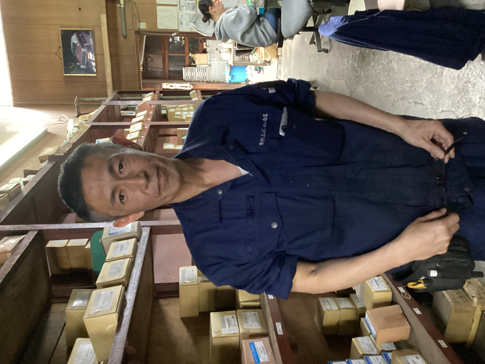

会社概要
- 会社名：株式会社杉山ボールト商店
- 所在地：〒812-0037 福岡県福岡市博多区御供所町5-18
- 代表者：松田 昌彦
- 社長紹介：代表取締役の松田 昌彦は、福岡の名門・大濠高校バスケットボール部出身で、在学中にインターハイに出場した経験を持ちます。若い頃から鍛え上げられたチーム精神とリーダーシップは、現在の経営にも生かされています。
- 
- 電話番号：092-281-6275
- FAX番号：092-281-6279
- 創業：明治43年 杉山鉄工所として発足
- 沿革：
昭和29年 杉山ボールト商店に改組
昭和49年 株式会社化
平成7年 資本金1,000万円 - 電話番号：092-281-6275
- FAX番号：092-281-6279